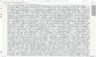

Journal · 2026-03-24
微信聊天记录
吉姆哈克 : 老哥在吗？ 2026年3月24日 11:28
吉姆哈克 : 这是我请龙虾帮我将音频上传到一个工具网站，操作“音频转文字”的结果 2026年3月24日 11:29

吉姆哈克 : 这是提取好了的文案，但有9905个字 2026年3月24日 11:30 吉姆哈克 : 我想请他帮我“合理分段”“纠正错别字” 2026年3月24日 11:30 吉姆哈克 : 但之前遇到这个任务，他总是断断续续、偷工减料、丢掉了好多文本 2026年3月24日 11:31 吉姆哈克 : 所以，这应该用什么技能呢？ 引用：我想请他帮我“合理分段”“纠正错别字” 2026年3月24日 11:31 吉姆哈克 : 1. 先学习技能https://clawhub.ai/ivangdavila/chinese和https://clawhub.ai/dizhu/chinese-copywriting-guidelines 2.学习后，将我本地的笔记文件，C:\Users\NewtN\Downloads\【伯爵】丐版法西斯？莫迪背后的印度国民志愿服务团是什么来头？.md合理分段、纠正错别字 3.不要废话 直接给我结果生成在同目录下 文件名字 叫【伯爵】丐版法西斯？莫迪背后的印度国民志愿服务团是什么来头？分段纠错.md 4.遇到登录选项，你只要等待即可，我来帮你登录！ 2026年3月24日 11:46 吉姆哈克 : 想要小龙虾学习技能，复制粘贴技能链接就行了吗？不需要下载吗？ 2026年3月24日 11:46 龙悦科技小马哥 : 你让他帮你全网搜技能 2026年3月24日 11:48
吉姆哈克 : 搞定了，字数多了一些，10182个字，是正常的，因为加了一些标题 2026年3月24日 11:54 龙悦科技小马哥 : [表情] 2026年3月24日 11:59
吉姆哈克 : 他并没有全网搜 2026年3月24日 12:00 吉姆哈克 : 还是来到了ClawHub这个网站 2026年3月24日 12:00 吉姆哈克 : [图片] 2026年3月24日 12:01 吉姆哈克 : 而且，无头模式，下载的文件 2026年3月24日 12:01 吉姆哈克 : 我自己点不开，在文件夹中也看不到 2026年3月24日 12:01 吉姆哈克 : 无头模式，自己是不是不能下载东西，只能让小龙虾帮忙下载？ 2026年3月24日 12:02 吉姆哈克 : 我在自己的浏览器中，下载的就是个zip压缩包。在无头浏览器中下载的，就是个莫名其妙的东西，点不开，文件夹里看不见 引用： （调试输出省略） 2026年3月24日 12:03
吉姆哈克 : 我刚发现了一个技术空白 2026年3月24日 12:53 吉姆哈克 : 目前网上有没有“批量下载网页图片”的技能 2026年3月24日 12:53
龙悦科技小马哥 : 你研究鼓捣一个 2026年3月24日 12:58 龙悦科技小马哥 : 小伙子 可不要用这做WFFZ的事哦 2026年3月24日 12:59 吉姆哈克 : 我想爬取“喻家山下”的QQ空间所有的照片 2026年3月24日 12:59 吉姆哈克 : 那是华中大的官媒 2026年3月24日 12:59 吉姆哈克 : 不要紧 2026年3月24日 12:59 吉姆哈克 : WFFZ，这我还真不敢 引用：小伙子 可不要用这做WFFZ的事哦 2026年3月24日 13:00 吉姆哈克 : [破涕为笑][破涕为笑][破涕为笑] 2026年3月24日 13:00 吉姆哈克 : 目前跟我的任务相关的，只有下载QQ空间照片这个技能，但是只能下载自己的账号的 引用：我想爬取“喻家山下”的QQ空间所有的照片 2026年3月24日 13:00 龙悦科技小马哥 : [旺柴][旺柴][旺柴] 2026年3月24日 13:02
吉姆哈克 : 老哥在吗？ 2026年3月24日 17:39
王佑齐 : 组织行为学上节课有布置作业吗 2026年3月24日 13:59 吉姆哈克 : 窝泥马的，我每次来晚一些，后面都坐着个秃头领导[发抖][发抖][发抖] 2026年3月24日 14:04 吉姆哈克 : 那个秃头领导，每次看到我来晚了，都注视着我入座[Emm][Emm][Emm] 2026年3月24日 14:04 吉姆哈克 : 所以，质性研究方法，上课的课件，老师发过吗？ 引用： 他也是在快下课的时候才说了一嘴 2026年3月24日 14:05 吉姆哈克 : [图片] 2026年3月24日 14:07 吉姆哈克 : 质性研究方法，好像确实没发过课件 引用：所以，质性研究方法，上课的课件，老师发过吗？ 2026年3月24日 14:07 吉姆哈克 : 计算社会科学的文献综述，还要继续写下去吗？ 2026年3月24日 14:09 王佑齐 : 要的 2026年3月24日 14:58 万泽宇 : 结合图片中“5 情绪管理对策”这一章节标题，以及“情境模拟（目的：情绪启动）”和“缓解消极情绪的对策”的具体要求，为您设计一个非常适合课堂小组讨论的具体情境模拟案例： 情境模拟案例名称：小组汇报前的“情绪风暴” 1. 情境背景设定 ? 场景：你们小组刚刚接到了一项紧急任务——要在明天上午的课程汇报中展示一份关于“城市交通拥堵治理”的研究报告。 ? 当前状态：现在是晚上8点，距离截止时间只剩12小时。 ? 触发事件（情绪启动点）： ? 成员A（组长）：负责统筹，但他刚刚发现之前收集的核心数据有误，导致结论站不住脚，需要立刻重写，他感到极度焦虑，担心任务失败，不断叹气：“完了，来不及了，大家怎么办？” ? 成员B（资料员）：为了赶进度，已经连续熬夜两天，现在眼皮打架，感觉身体透支，非常疲惫和烦躁，突然站起来把笔一摔，说：“我真的撑不住了，这活没法干了！” ? 成员C（发言人）：因为B的态度感到被指责，觉得B在甩锅，同时也对A的数据错误感到不满，认为A没有提前审核好。他感到委屈和愤怒，准备要退出小组不干了。 ? 成员D（新人）：刚加入小组不久，看到大家激烈争吵，感到非常无助和紧张，想帮忙但不知道从何入手，生怕自己说错话火上浇油。 2. 任务要求（模拟讨论） 在这个15分钟的讨论中，请小组扮演这四个角色（可以轮换扮演），共同商量如何化解当前的危机。请尽可能多地提出缓解消极情绪的对策，并制定下一步的行动方案。 3. 模拟讨论要点（供参考） ? 情绪识别：大家目前分别处于什么情绪状态？（焦虑、愤怒、疲惫、无助） ? 情绪表达：如何让成员B和C的负面情绪得到宣泄而不伤害彼此？ ? 对策生成： ? 个人层面：成员A如何通过“认知重构”看待数据错误（视为机会而非灾难）？成员B如何调整作息（哪怕只是5分钟休息）？ ? 团队层面：如何通过“积极倾听”化解A和C的矛盾？如何分工协作（如让D负责整理格式，减轻A的压力）？ ? 环境调节：是否需要暂时离开座位走动一下，或者喝点水来调整气氛？ 4. 预期汇报内容 在2分钟的汇报中，代表可以总结： ? 我们组面对的消极情绪是哪些（焦虑、愤怒、疲惫、无助）。 ? 我们采取了哪些对策来缓解这些情绪（如：暂停争吵，互相倾听，重新分工，心理暗示等）。 ? 最终我们成功恢复了平静，并制定了新的行动计划。 ------ 为什么这个案例适合？ 1. 贴近生活：大学生经常面临小组作业和汇报，容易产生类似冲突，代入感强。 2. 情绪复杂：涉及多种消极情绪的交织（焦虑、愤怒、疲惫、无助），能激发多维度讨论。 3. 对策丰富：既涉及个体心理调节（如放松训练、认知调整），也涉及人际沟通（如共情、倾听），符合“情绪管理对策”的主题。 希望这个具体的情境能帮助您的课堂讨论更加生动和深入！ 2026年3月24日 17:11
方是钰 : 具体哪些用途啊 引用：学长，请你不要告诉别人，这玩意儿真好用 2026年3月24日 22:24 方是钰 : 哈哈哈哈 引用：这是我让小龙虾背的锅 2026年3月24日 22:24 吉姆哈克 : 一个龙虾，能够解放你的双手 2026年3月24日 22:25 吉姆哈克 : 一群龙虾，能够解放你这个人 2026年3月24日 22:26 吉姆哈克 : 但要是说到具体的用途 2026年3月24日 22:26 吉姆哈克 : 目前来看，就只是解放我的双手 2026年3月24日 22:26 吉姆哈克 : [柴小桑与无虞小船的聊天记录] 2026年3月24日 22:27 吉姆哈克 : 其实，在使用小龙虾之前 2026年3月24日 22:27 吉姆哈克 : 我搞电脑自动化，都是安排一个电子黑奴去干的 2026年3月24日 22:28 吉姆哈克 : 电子黑奴的威力，实在是太大了 2026年3月24日 22:28 方是钰 : 我去这是龙虾自己去刷屏啊，有指令吗 引用：柴小桑与无虞小船的聊天记录 2026年3月24日 22:29 吉姆哈克 : 刷屏的不是小龙虾，而是电子黑奴，一个自动化小机器人 2026年3月24日 22:29 方是钰 : 你撤回了一条消息 2026年3月24日 22:30